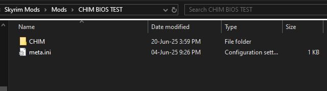
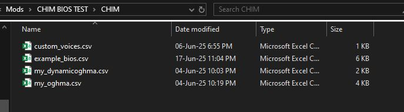
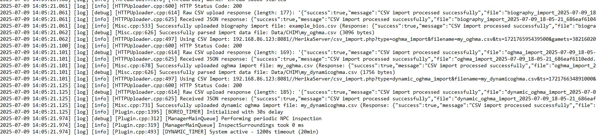

CHIM Modders Guide
This page is for modders who want to package CHIM support directly into their own mod. The main current workflow is simple: ship supported CHIM data files inside your mod, let CHIM detect them, and let the player install your mod like normal.
Custom CHIM Data Mods
How The Current Data Mod Flow Works
The current CHIM plugin looks in Data/CHIM when it starts up. On first load each session, it checks that folder for supported CSV files and then imports the supported CHIM data automatically.
_bios.csv: NPC biography data._oghma.csv: Oghma knowledge and lore data._dynamicoghma.csv: Oghma data that changes as quests or events move forward._descriptions.csv: description data for items or other game content._actions.csv: custom action data.
Those five file types are the current server-imported data mod formats. They are uploaded by the plugin to the CHIM server automatically, so the player does not need to rebuild them by hand in HerikaServer.
The current CHIM download includes sample CSV files you can use as a starting point. Get them from the CHIM Nexus files page.
Voice Files
_voices.csvis also supported inData/CHIM, but it works a little differently.- Voice CSV files are read locally by the plugin and cached for voice-type mapping.
- In plain terms, this is how you can tell CHIM which voice file should be used for a voice type when the normal built-in mapping is not enough.
How To Package A Data Mod
- Create a
CHIMfolder inside your mod. - Place your CHIM CSV files in that folder.
- Use the correct filename suffix so CHIM knows what each file is for.
- Ship those files as part of the mod like any other asset.
The practical goal is straightforward: the player installs your mod, launches the game, and CHIM picks up your support data automatically.


Practical Notes
- CHIM only scans the top level of
Data/CHIMfor these import files, so keep the CSV files directly in that folder. - Files must be real
.csvfiles. - CHIM rejects CSV files larger than 10 MB.
- CHIM warns when a CSV goes over 5 MB, so splitting very large data packs is still a good idea.
- The current voice CSV parser expects at least
voicetype,voicefile, with an optional transcript column after that.
How To Test It
- Install your mod normally and launch the game with CHIM enabled.
- Let CHIM finish its startup load.
- Check whether your biography, Oghma, description, or action data appears in the matching CHIM pages.
- Check the AIAgent log if something does not import correctly.
The most common Skyrim log locations are:
C:\Users\YOURUSER\Documents\My Games\Skyrim Special Edition\SKSE
C:\Users\YOURUSER\Documents\My Games\Skyrim.INI\SKSE

If the import succeeds, your mod can be shipped with those CHIM files included and the player should not need to do manual setup for that data.
Creating Plugins
What A CHIM Plugin Is
A CHIM plugin is a server-side extension that lives inside the CHIM server's ext folder. A plugin can add its own web page, add or change prompt behavior, expose new AI actions, run its own helper service, or read CHIM data to build its own tools.
In practice, this means plugins are the main way to add new server-side features without changing the whole server. Maintained examples include CHIM-Custom, CHIM-Twitch-Bot, and CHIM-MindMap. If you only need to ship new biographies, Oghma data, descriptions, or action definitions, that is usually a Data/CHIM data-mod job instead of a full ext plugin.
Where Plugins Live
Installed plugins live under HerikaServer/ext/<plugin-name>. The server scans the ext folder and loads plugin files by filename, so your plugin does not need one giant entry script for everything.
Manifest File
The one file you should always have is manifest.json. This is what the CHIM plugin manager reads to show the plugin name, description, version, and plugin page.
The current maintained plugins use fields like:
name: plugin name used by the installer and plugin manager.description: short description shown in the plugin manager.config_url: the page the user opens to configure or use the plugin.config_url_target: usually_blankso the page opens in a new tab.git_repo: GitHub repo used by the installer for updates.default_channel: channel selected when the plugin is first installed.channels: named release sources with labels, branches, package sources or URLs, and optional force-install support.version: current plugin version.schema_version: use2if you want the current update flow in the plugin manager.
What Files CHIM Actually Loads
CHIM loads plugin hook files by name if they exist. You only create the ones your plugin actually needs.
globals.php: early global setup.- AI actions: add or change AI-callable actions through the Action Editor/action catalog. Current action loading is data-driven rather than a separate plugin hook file.
preprocessing.php: early request preprocessing.prerequest.php: run logic before the main request is sent.context_pre.php: inject or change context before the system prompt is built.context.php: add extra context after the system prompt is built.chimRegisterPromptInjection(): register ordered content for thecharacter_bottomorprompt_bottomprompt slots.chimRegisterActorProfileEnricher(): append focused plugin state to an actor profile without replacing the core profile text.prepostrequest.phpandpostrequest.php: react after a request runs.context_building.php: alter historical context building.prompts.phpanddialogue_prompt.php: extend or override prompt text.json_response_custom.php: customize JSON response shaping if your plugin needs it.
The important point is that CHIM already has named hook points. A plugin usually works by dropping the right file into the right place rather than hacking core pages.
What Plugins Can Interface With
CHIM plugins can hook into more than one layer of the server. The useful way to think about it is: you are not limited to just adding a menu page. A plugin can affect prompt building, request handling, available actions, and CHIM's stored data.
-
Named prompt injection slots:
chimRegisterPromptInjection()lets a plugin register static text or a callback with a stable id and priority. CHIM renderscharacter_bottomafter character context andprompt_bottomat the bottom of the assembled prompt. Lower priority values render first.
Source:HerikaServer/lib/prompt_injections.phpchimRegisterPromptInjection( 'prompt_bottom', 'my_plugin.instructions', 'Use the extra state supplied by My Plugin.', 100 ); -
Actor profile enrichment:
chimRegisterActorProfileEnricher()accepts a callback that can return one line or a list of lines for a named actor. Use it for concise plugin-owned state that belongs beside equipment, activity, or appearance details.
Source:HerikaServer/lib/prompt_injections.phpchimRegisterActorProfileEnricher( 'my_plugin.actor_state', function ($actorName, $actorType, $context) { return myPluginDescribeActor($actorName); } ); -
Early request preprocessing:
preprocessing.phpruns near the start of request handling, before most of the main processing path. This is where a plugin can normalize or prepare incoming data early.
Source:HerikaServer/main.php// Call extension's preprocessing files requireFilesRecursively(__DIR__.DIRECTORY_SEPARATOR."ext".DIRECTORY_SEPARATOR,"preprocessing.php"); -
Pre-request logic:
prerequest.phpruns before the main request processor. This is a good place to inspect or alter request state before CHIM builds the rest of the response flow.
Source:HerikaServer/main.phprequireFilesRecursively(__DIR__.DIRECTORY_SEPARATOR."ext".DIRECTORY_SEPARATOR,"prerequest.php"); // Non-LLM request handling. require(__DIR__.DIRECTORY_SEPARATOR."processor".DIRECTORY_SEPARATOR."comm.php"); -
Prompt context before system prompt build:
context_pre.phpruns before the system prompt is assembled. Plugins can use this to inject extra nearby context or other support information before CHIM locks the main prompt together.
Source:CHIM-Twitch-Bot/context_pre.php$currentNearby = $GLOBALS["PROMPT_NEARBY_SECTIONS"] ?? ""; $GLOBALS["PROMPT_NEARBY_SECTIONS"] = twitchContextInjectIntoNearbySections($currentNearby, $contextBlock); -
Prompt context after system prompt build:
context.phpruns after the system prompt is built. This is useful when you want to append or adjust extra context after the main structure already exists.
Source:HerikaServer/main.php$head[] = array('role' => 'system', 'content' => $systemPrompt); // Check for context overrides on ext dir (plugins) after system prompt build requireFilesRecursively(__DIR__.DIRECTORY_SEPARATOR."ext".DIRECTORY_SEPARATOR,"context.php"); -
Historic context building:
context_building.phpcan alter the built conversation/history context itself. This is the layer to use if you need to reshape what old context CHIM carries forward.
Source:HerikaServer/lib/data_functions.php$GLOBALS["CONTEXT_BUILDING_DATA"]=$orderedData; requireFilesRecursively(__DIR__."/../ext/","context_building.php"); return $GLOBALS["CONTEXT_BUILDING_DATA"]; -
Prompt text and dialogue templates:
prompts.phpanddialogue_prompt.phplet a plugin extend or override prompt text rather than only adding raw context blocks.
Source:HerikaServer/prompts/prompts.phpandHerikaServer/prompts/dialogue_prompt.php// Prompts provided by plugins requireFilesRecursively(__DIR__.DIRECTORY_SEPARATOR."..".DIRECTORY_SEPARATOR."ext".DIRECTORY_SEPARATOR,"prompts.php"); requireFilesRecursively(__DIR__.DIRECTORY_SEPARATOR."..".DIRECTORY_SEPARATOR."ext".DIRECTORY_SEPARATOR,"dialogue_prompt.php"); -
LLM actions and callable functions: the current action layer is data-driven through the Action Editor/action catalog. Use this path when your plugin or data package wants CHIM to expose new things the AI can do.
Source:HerikaServer/data/core_action_seed.sql('WaitHere', 'Wait_Here', '#HERIKA_NAME# waits and loiters at the current location.', '#HERIKA_NAME# waits and stands at the place.', TRUE, TRUE, FALSE, FALSE, '{"type":"object","required":[""],"properties":{"target":{"type":"string","description":""}}}'::jsonb, '{"source":"functions.php","status":"active","builtin":true,"dispatch":"plugin_command","cooldown_seconds":300}'::jsonb, TRUE, 0, NULL) -
Post-request behavior:
prepostrequest.phpandpostrequest.phprun after request processing. Use this layer if the plugin needs to react to the result of a request, save extra data, or trigger follow-up behavior.
Source:HerikaServer/main.phprequireFilesRecursively(__DIR__.DIRECTORY_SEPARATOR."ext".DIRECTORY_SEPARATOR,"prepostrequest.php"); require(__DIR__.DIRECTORY_SEPARATOR."processor".DIRECTORY_SEPARATOR."postrequest.php"); requireFilesRecursively(__DIR__.DIRECTORY_SEPARATOR."ext".DIRECTORY_SEPARATOR,"postrequest.php"); -
JSON response shaping:
json_response_custom.phpcan customize structured response templates when your plugin needs to alter how JSON-side output is prepared.
Source:HerikaServer/functions/json_response.phpchimEnsureRecursiveRequireHelper(); requireFilesRecursively(__DIR__.DIRECTORY_SEPARATOR."..".DIRECTORY_SEPARATOR."ext".DIRECTORY_SEPARATOR,"json_response_custom.php"); $GLOBALS["CHIM_JSON_RESPONSE_EXT_LOADED"] = true; -
Web UI and control pages: a plugin can expose its own page through
config_urlin the manifest. That can be a settings page, dashboard, monitor, visualizer, or tool panel.
Source:CHIM-Twitch-Bot/manifest.json{ "name":"CHIM-Twitch-Bot", "description":"Allows viewers to control AI NPC's via Twitch chat.", "config_url":"/HerikaServer/ext/CHIM-Twitch-Bot/index.php", "config_url_target": "_blank" } -
Background helpers and services: a plugin can ship its own runtime script or worker process if it needs to keep doing work outside the normal page request cycle.
Source:CHIM-Twitch-Bot/command.php$cmd = sprintf('%s %s %s %s %s', escapeshellarg($this->php_path), escapeshellarg($this->manager_script), escapeshellarg($task), escapeshellarg($type), escapeshellarg($sanitizedFreeText) ); exec($cmd, $output, $returnCode); -
Database schema: a plugin can create and update its own tables with ordered SQL files in
migrations. Plugin-owned objects should use the sharedpluginsPostgreSQL schema. The installer records completed files inplugins.plugin_migrationsso each migration runs once.
Source:HerikaServer/ui/server_plugin_installer.phpCREATE SCHEMA IF NOT EXISTS plugins; CREATE TABLE IF NOT EXISTS plugins.my_plugin_state ( actor_name TEXT PRIMARY KEY, state_json JSONB NOT NULL ); -
Existing CHIM data: plugins can read existing CHIM-side data such as memories, logs, rolemaster state, NPC data, and other stored runtime information if they are building tooling or integrations around it.
Source:CHIM-MindMap/api.php$sql = 'SELECT uid, summary, embedding, companions, gamets_truncated FROM memory_summary'; $params = []; $conditions = [];
In short, CHIM plugins can interface with both runtime behavior and stored data. Some plugins mainly change what the AI sees or can do, while others mainly add external integrations or build tools on top of CHIM's existing data.
Relationship System As A Plugin Reference
The built-in HerikaServer/ext/relationship_system folder is a useful reference for larger CHIM plugins. It is not just a settings page. It uses hook files, an embedded UI component, async queue tables, a background worker, and a dedicated helper class to keep heavier relationship analysis out of the main chat response path.
You do not need this much structure for every plugin. The useful lesson is how the work is split: hook files connect into CHIM, UI files let users manage data, queue tables avoid blocking gameplay, and a worker handles expensive processing.
Prompt-time hook
context_pre.php checks whether the relationship system is enabled, loads shared helpers, and starts the worker when a dedicated relationship connector is configured.
Source: HerikaServer/ext/relationship_system/context_pre.php
if (empty($GLOBALS['RELATIONSHIP_SYSTEM_ENABLED'])) {
return;
}
require_once $GLOBALS["ENGINE_PATH"] . "lib/relationship_manager.php";
require_once $GLOBALS["ENGINE_PATH"] . "lib/logger.php";
$useRelLLM = !empty($GLOBALS['RELLLM_CONNECTOR']) && $GLOBALS['RELLLM_CONNECTOR'] > 0;
if ($useRelLLM) {
_relEnsureWorkerRunning();
}Post-request hook
postrequest.php runs after a response and queues relationship work instead of making the player wait for another LLM call during chat.
Source: HerikaServer/ext/relationship_system/postrequest.php
if (empty($GLOBALS['RELATIONSHIP_SYSTEM_ENABLED'])) {
return;
}
require_once $GLOBALS["ENGINE_PATH"] . "lib/logger.php";
$_relEntryNpcName = $GLOBALS["HERIKA_NAME"] ?? 'NULL';
Logger::debug("[REL-ENTRY] postrequest.php loaded for HERIKA_NAME='{$_relEntryNpcName}'");Plugin-owned queue table
The relationship plugin creates its own queue table and keeps migration-style changes close to the feature that owns them.
Source: HerikaServer/ext/relationship_system/async_queue.php
$GLOBALS['db']->query("
CREATE TABLE IF NOT EXISTS relationship_eval_queue (
id SERIAL PRIMARY KEY,
npc_id INTEGER NOT NULL UNIQUE,
eval_data JSONB NOT NULL,
created_at TIMESTAMP DEFAULT NOW(),
retry_count INTEGER DEFAULT 0,
last_error TEXT
)
");Embeddable UI component
relationship_editor.php is written as a component that can be included from an existing CHIM page. This is a good pattern when your plugin extends an existing workflow instead of needing a full standalone dashboard.
Source: HerikaServer/ext/relationship_system/relationship_editor.php
if (!isset($editItem) || !is_array($editItem)) {
return;
}
require_once $GLOBALS["ENGINE_PATH"] . "lib/relationship_manager.php";
$extendedData = json_decode($editItem['extended_data'] ?? '{}', true) ?: [];
$jsonbRelationships = $extendedData['relationships'] ?? [];Background worker
worker.php is a CLI script that can run once or as a daemon. This is the pattern to copy when a plugin has work that should not block a normal web request.
Source: HerikaServer/ext/relationship_system/worker.php
$daemon = in_array('--daemon', $argv);
$interval = 2;
foreach ($argv as $arg) {
if (strpos($arg, '--interval=') === 0) {
$interval = max(1, intval(substr($arg, 11)));
}
}Packaging And Deployment
The current plugin manager installs and updates plugins from GitHub releases. If you want your plugin to follow the same flow, package it the same way the maintained plugins do.
- Create a GitHub repo for the plugin.
- Put a valid
manifest.jsonin the plugin root. - If the plugin needs database tables, add a
migrationsfolder with ordered.sqlfiles. - Create a release asset named exactly
<PACKAGE_NAME>.tar.gzor<PACKAGE_NAME>.tar. - The package should extract into one plugin folder that contains the manifest and the rest of the plugin files.
On install, the generic installer downloads the latest release asset, extracts it into HerikaServer/ext/<PACKAGE_NAME>, and runs any plugin migrations it finds. It also tracks which migrations have already been run, so updates can add new ones safely.
If you want the plugin to appear in the built-in repository list, it also needs an entry in the plugin repository data used by the plugin manager. See Submitting Your Plugin To The CHIM Repository below for exactly where to submit that entry.
Bundling a server plugin with a Skyrim mod
A Skyrim mod can also carry its matching CHIM server plugin so the player does not need a separate manual server install.
- Place the package under
Data/CHIM/server-plugins/<plugin-name>. - Use a versioned
.zipor.dwpkgpackage containing the complete server plugin. - When Skyrim starts, CHIM uploads and installs the package only when the connected server needs that version.
Submitting Your Plugin To The CHIM Repository
The built-in repository list is a catalog file that ships inside HerikaServer. To get your plugin listed there, you open a pull request that adds one entry to that file.
- Where to open the pull request: https://github.com/abeiro/HerikaServer
- Branch to target:
unstable - File to edit:
ui/data/plugin_repository.json
Your plugin still lives in your own GitHub repo. The catalog entry only tells CHIM what to show and where to download it from.
Add one new key under plugins, using the same fields the existing entries use:
"your-plugin-id": {
"name": "Your-Plugin-Name",
"description": "One short sentence shown in the plugin manager.",
"git_repo": "your-github-user/Your-Plugin-Name",
"github_url": "https://github.com/your-github-user/Your-Plugin-Name",
"mod_download_url": "",
"default_channel": "main",
"channels": {
"main": {
"label": "Live",
"branch": "main",
"package_source": "release",
"package_urls": [
"https://github.com/your-github-user/Your-Plugin-Name/releases/latest/download/Your-Plugin-Name.tar.gz",
"https://github.com/your-github-user/Your-Plugin-Name/releases/latest/download/Your-Plugin-Name.tar"
]
}
}
}A few notes on the fields:
nameshould match the name in your rootmanifest.jsonand the folder CHIM installs underHerikaServer/ext.mod_download_urlis optional. Leave it as an empty string unless your plugin also has a matching Skyrim mod download.- Keep
default_channelset tomain, and always ship amainchannel withpackage_urlspointing at your release assets. Extra channels such asdevare optional.
Submission checklist
- Make your plugin repo public, with a valid
manifest.jsonin the repo root. - Publish a GitHub release with the
<PACKAGE_NAME>.tar.gzor<PACKAGE_NAME>.tarasset attached. - Install that package on a clean CHIM server and confirm the plugin loads and any migrations run.
- Add your entry to
ui/data/plugin_repository.json. - Open a pull request against the
unstablebranch ofabeiro/HerikaServer. - In the pull request description, link your repo and your release, and say what you tested.
Database Migrations
If your plugin needs its own tables, use the built-in migration system instead of asking users to run SQL by hand.
- Create a
migrationsfolder in the plugin root. - Name files in order, like
001_initial_schema.sql,002_add_indexes.sql, and so on. - Write them to be safe to run on real installs, using patterns like
IF NOT EXISTSwhere possible. - Do not keep rewriting old migration files after release. Add new ones instead.
Action Editor
The Action Editor is the page CHIM uses to manage its action catalog. It is not just editing a loose text list. It is working with action rows that CHIM stores in its action catalog tables, with built-in rows and custom override rows merged together for the live view.
What The Action Editor Actually Controls
In plain terms, the Action Editor controls what the AI sees, whether an action can run, where it can appear, and how CHIM handles the result.
- Name: the action name CHIM exposes in the catalog.
- Description: the main instruction text telling the AI what the action is for. In custom action CSV files this is stored in the
descriptioncolumn. - Action: the command or dispatch behavior associated with the catalog row.
- Enabled state: whether the action is currently active.
- Advanced Options: scope flags, confirmation policy, return text, follow-up behavior, parameter schema, metadata, and script-proxy details.
Scopes
The editor groups actions by scope using three stored flags: available_to_npc, available_to_followers, and available_to_narrator. If none of those are set, the editor labels the action as Dynamic.
- NPC: actions available in normal NPC conversation flow.
- Followers: actions available when CHIM is working in follower mode.
- Narrator: actions available to narrator-side behavior.
- Dynamic: actions with no fixed scope flag set in the catalog row.
A single action can appear in more than one scope if more than one flag is enabled.
What Each Editor Section Does
The main table keeps routine editing intentionally small. Each row shows the action name, description, action, enabled state, and compact controls. Open Advanced Options only when you need to change execution behavior.
- Enable or Disable: turns the action on or off by writing a persistent custom override row.
- Main fields: edits the action name, description, and action without changing the original built-in row.
- Advanced Options: opens the modal for confirmation, follow-up, return-message, scope, schema, metadata, and script-proxy settings.
- Reset Override: deletes the custom override row and returns the action to its base definition.
What The Config Section Means
The config area is driven by editor field definitions in the action metadata. Every action can inherit the shared follow-up settings, and some built-in actions also add their own extra fields such as gold cost, cooldown, requirement, or allowed NPC settings.
- Follow-up Enabled: allows CHIM to generate a second response after the action result comes back.
- Require Confirmation: asks the player to accept or decline the action in Prisma before CHIM dispatches it. Declining hard-cancels the action and does not generate a replacement AI response.
- Follow-up Argument Name: tells CHIM which argument from the original action call should be reused when building that follow-up request. If this is blank, CHIM falls back to the required schema field, then common names like
target,location,item,amount, orspeed. - Follow-up Prompt: the extra instruction CHIM prepends when it asks for the follow-up line.
- Allow Follow-up Actions: lets the follow-up response call another action again, within CHIM's follow-up chain limit. The current shared limit is one chained follow-up action.
Built-in, imported, plugin, and custom actions can use the same confirmation control when their dispatch path supports action confirmation. Actions can also define their own config fields through metadata.editor_fields. Those fields appear in Advanced Options under the shared controls. This is how actions like Hire_Ferry expose Gold Cost and Allowed NPCs without hardcoding those values into the description.
Source: HerikaServer/lib/core/action_catalog.php
'HireFerry' => [
[
'key' => 'cost_gold',
'label' => 'Gold Cost',
'type' => 'integer',
'default' => 50,
'minimum' => 1,
'format' => 'gold',
],
[
'key' => 'allowed_npc_names',
'label' => 'Allowed NPCs',
'type' => 'textarea',
'default' => "Gort\nHarlaug\nJolf",
'format' => 'name_list',
],
]
The saved config can then be reused by requirements and parameter templates. For Hire_Ferry, allowed_npc_names limits which NPCs can offer ferry travel, and cost_gold is copied into the action amount.
'HireFerry' => [
'npc_name_in_action_config_list' => [
'config_key' => 'allowed_npc_names',
],
]
'HireFerry' => [
'target' => '{{parameter_target}}',
'amount' => '{{config.cost_gold}}',
]Not every action has editable config. If an action does not define editor fields, the page simply shows that there is no editable config for that row. Also note that follow-up is not the same thing as the return message: the return message is the action result text CHIM can place into context, while follow-up asks the LLM for another in-character line after that result.
Prompt, Return Message, And Placeholders
The editor shows the AI-facing instruction as Prompt, but custom action CSVs still use the historical description column name. Keep prompt text short, direct, and specific about when the AI should use the action.
Return messages should describe the completed action in plain text. CHIM can template common placeholders before the message is logged or used as action-result context:
#HERIKA_NAME#: the acting NPC.#PLAYER_NAME#: the player.#TARGET#: the main target argument, usually an actor or NPC.#LOCATION#: the destination or location argument when one exists.#ITEM#: the item argument when one exists.#AMOUNT#: the amount argument when one exists.#RESULT#: the raw result text returned by the action bridge when available.
For game-side actions, the Papyrus or DLL bridge should still report a result back to CHIM, commonly through a funcret message. For server-side script-proxy actions, HerikaServer can execute the script proxy and write the action result itself.
How Custom Actions Are Shipped
Custom actions are normally shipped as _actions.csv files inside Data/CHIM. On startup, the CHIM plugin scans that folder, finds files ending in _actions.csv, and uploads them as custom_action_import data. The server then imports those rows into the custom action catalog.
In practice, this means a modder can ship action definitions as part of a normal mod install. The player installs the mod, launches CHIM, and the actions appear automatically if the CSV is valid.
Important Columns In An Actions CSV
The current action import format supports the action text, state, scope, parameter schema, metadata, and an optional script-proxy block in one row.
code_name: the stable internal action id.action_name: the visible action name.description: the instruction text telling the AI what the action does.return_message: the result text returned after the action runs.available_to_npc,available_to_followers,available_to_narrator: the scope flags.is_activated: whether the action starts enabled.game_function: whether the action is treated as a game-side action in the editor's Dispatch filter. Defaults to enabled for imported custom actions.parameters_json: the JSON schema for action arguments.metadata: extra action wiring such as dispatch type, source, follow-up settings, and bridge details.import_version: optional numeric version for imported action rows. A row only overwrites an existing imported custom row when its version is higher.script_proxy_program: optional server-side runtime logic for script-proxy actions.
Two Main Ways To Build A Custom Action
The useful split is not "simple versus advanced". The real split is who executes the action.
- Plugin-command actions: CHIM exposes the action in the catalog, but the actual execution happens through game-side code such as Papyrus or a DLL-backed bridge. This is the normal model when the action needs the game client to do the work.
- Script-proxy actions: the catalog row includes a server-side script-proxy program, and HerikaServer can run that action logic itself. This is useful for server-side command batches, database writes, or simple runtime helper behavior.
If the action needs to manipulate Skyrim gameplay directly, a plugin-command action is usually the right model. If it only needs server-side logic, data updates, or helper behavior, a script-proxy action can be enough. If a custom action includes script_proxy_program and does not explicitly set metadata.dispatch, CHIM treats it as script_proxy; otherwise imported custom actions default to plugin_command.
What Script Proxy Can And Cannot Do
Script Proxy is a small server-side action runner. It lets an action row describe simple work that HerikaServer can perform directly instead of handing the action to a Papyrus or DLL bridge.
- What it can do: send supported command-builder messages, insert known server database rows, and update supported NPC metadata using values from the action context.
- What it is good for: simple repeatable action sequences, lightweight server bookkeeping, and actions where the server already has enough context to do the work.
- What it is limited by: it is not a general scripting language, it should not replace complex Papyrus/game-side logic, and it can only use the command, database, and metadata operations the action catalog runner supports.
- How results work: if the row has a return message, CHIM can log a readable action result after the script-proxy program runs. Follow-up behavior is still controlled separately by the action metadata.
Existing Script Proxy Actions
Current built-in script-proxy actions include Drink, Make_A_Toast, Start_Ritual_Ceremony, and End_Ritual_Ceremony. They show the main patterns Script Proxy supports: choose a case from context, send command-builder messages, write bookkeeping rows, and update NPC metadata.
Drink: choose behavior from actor state
Drink switches on actor_furniture. If the actor is in a chair, it sends one idle command; otherwise it uses the default idle. It also inserts an actions_issued row so the server records that the action happened.
Source: HerikaServer/data/core_action_seed.sql
{
"switch_on": "actor_furniture",
"cases": {
"Chair": {
"commands": [
{"cmd_id": 34, "args": {"akIdle": "0x00065d07", "targetObjectFormId": "{{actor_refid}}"}}
]
},
"__default": {
"commands": [
{"cmd_id": 34, "args": {"akIdle": "0x00103656", "targetObjectFormId": "{{actor_refid}}"}}
]
}
}
}Make_A_Toast: run a short command sequence
Make_A_Toast sends two command-builder messages. The second command uses delay_seconds, so Script Proxy can model a small repeatable sequence without creating a custom Papyrus bridge for that action.
Source: HerikaServer/data/core_action_seed.sql
{
"commands": [
{"cmd_id": 34, "args": {"akIdle": "0x0010528a", "targetObjectFormId": "{{actor_refid}}"}},
{"cmd_id": 34, "delay_seconds": "{{toast_delay_seconds}}", "args": {"akIdle": "0x00103656", "targetObjectFormId": "{{actor_refid}}"}}
],
"db_inserts": [
{"table": "actions_issued", "data": {"action": "Toast", "actorname": "{{actor_name}}"}}
]
}Start_Ritual_Ceremony: branch on the action parameter
Start_Ritual_Ceremony switches on parameter_target. That lets one action support variants such as Magical or Blood while still using one action row and one parameter schema.
Source: HerikaServer/data/core_action_seed.sql
{
"switch_on": "parameter_target",
"cases": {
"Magical": {
"commands": [
{"cmd_id": 34, "args": {"akIdle": "0x000f11e2", "targetObjectFormId": "{{actor_refid}}"}},
{"cmd_id": 300, "args": {"akObject": "{{actor_refid}}", "afDuration": 20, "targetObjectFormId": "0x0005fb82"}}
]
},
"Blood": {
"commands": [
{"cmd_id": 34, "args": {"akIdle": "0x000af886", "targetObjectFormId": "{{actor_refid}}"}}
]
}
}
}Start and end ritual: update server-side NPC state
Ritual actions also show the metadata pattern. Starting a ritual sets ritual_state and activity_status; ending it clears that state and marks the NPC idle again.
Source: HerikaServer/data/core_action_seed.sql
{
"npc_metadata_updates": {
"ritual_state": {
"type": "{{parameter_target}}",
"active": true,
"gamets": "{{game_ts}}",
"started_at": "{{local_ts}}"
},
"activity_status": {
"current_use": "{{parameter_target}}",
"current_action": "ritual"
}
}
}What the runner actually executes
The action catalog runner handles these program sections directly. This is the hard limit of Script Proxy: if the work is not expressible as cases, commands, database inserts, or NPC metadata updates, it belongs in game-side code or a dedicated server plugin.
Source: HerikaServer/lib/core/action_catalog.php
$executed = herikaActionCatalogExecuteScriptProxyCommands($program['commands'] ?? [], $context) || $executed;
$executed = herikaActionCatalogExecuteScriptProxyDbInserts($program['db_inserts'] ?? [], $context) || $executed;
$executed = herikaActionCatalogExecuteScriptProxyNpcMetadataUpdates($program['npc_metadata_updates'] ?? [], $context) || $executed;CHIM-NFF Example
CHIM-NFF is the clearest current example of how a custom gameplay action is built. The CSV in CHIM-NFF/CHIM/nff_actions.csv defines the actions CHIM should expose, and the Papyrus script in CHIM-NFF/Source/Scripts/CHIMNFF.psc is the runtime bridge that actually performs the follower-framework command.
Example action row
ExtCmdCHIMNFF_FollowMe,
Follow_Me,
"Resume following #PLAYER_NAME#.",
"#HERIKA_NAME# follows #PLAYER_NAME# again.",
false,
true,
true,
true,
"{""type"":""object"",""properties"":{},""required"":[]}",
"{""dispatch"":""plugin_command"",""source"":""CHIM-NFF"",""integration"":""nff"",""bridge_script"":""CHIMNFF"",""bridge_entrypoint"":""DispatchExternalCommand""}",
12,That row tells CHIM what the action is called, what it means, that it is a follower action, and that it should be dispatched through a plugin-command bridge instead of a server-side script proxy.
Example Papyrus bridge pattern
bool Function DispatchExternalCommand(string asNpcName, string asCommand, string asParameter) Global
bool handled = HandlesExternalCommand(asCommand)
bool success = false
if handled
success = ExecuteExternalCommand(asNpcName, asCommand, asParameter)
endif
AIAgentFunctions.logMessageForActor("command@" + asCommand + "@" + asParameter + "@" + resultText, "funcret", asNpcName)
return success
EndFunction
This is the key pattern. The CSV row defines the AI-facing action, the Papyrus bridge decides whether it handles that command, and then it reports the result back to CHIM through a funcret message.
Examples From Current Action Rows
The built-in action rows use the same framework a modded action uses. These examples are useful because they show the different jobs an action row can do without requiring a custom plugin.
- Information lookup actions: actions like
Inspect,Inspect_Surroundings, orCheck_Inventoryexpose a prompt and parameter schema, then depend on a result coming back from the game or server. Their return text or follow-up prompt tells CHIM how to turn that result into useful context. - Parameterized gameplay actions: actions like
Give_Item_Toshow how the parameter schema controls what the AI must provide. The schema can require fields such astarget,item, oramount, and the return message can template those values into a readable result. - Server-side script-proxy actions: actions like
Make_A_Toastshow the other execution style. Instead of waiting for an external bridge to handle the command, the action row can include a script-proxy program that HerikaServer executes directly. - External bridge actions: CHIM-NFF actions show the custom mod pattern. The action row tells CHIM what the AI can call, while a Papyrus bridge in the mod decides how to perform the command and reports the result back.
The common pattern is: the action row describes what the AI can call, the parameter schema describes what data the AI must provide, the dispatch metadata decides who executes it, and the return/follow-up settings decide how the result is fed back into CHIM.
How Follow-Up Actions Fit In
CHIM-NFF's TeachRightHandSpell row is a good example of the follow-up system. Its metadata enables a follow-up prompt so CHIM can produce one short in-character reaction after the spell-learning action succeeds.
This is what the shared follow-up config fields in the Action Editor are for. They do not make the gameplay action itself happen, and they are not required for CHIM to record the action result. They only control whether CHIM should ask the LLM for another in-character response after the action has already run and returned.